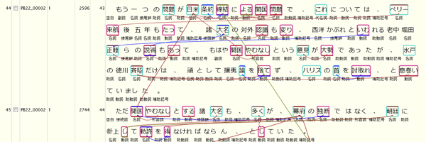
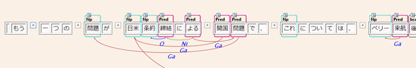

KwicViewに検索結果が表示されている状態で、メニューの "表示(View)" - "アノテーションをロード(Load Annotations)" またはツールバーのをクリックすると、表示範囲に対して付与されているSegment, LinkをView上に表示することができます。下図に例を示します。

- 文間にまたがるLinkについては、Link元、Link先の文がいずれも表示範囲にある場合には表示されます。
- 表示するSegment, Linkの種類と色は、メニューの "オプション(Option)" - "アノテーションタグ表示設定" でタグ名と表示色を登録しておく必要があります。(Tag_Appearanceを設定するに説明があります。) ここで、"VisibleInKwicView"にチェックのないアノテーション要素は表示されません。
また、DependencyEdit画面において、文内のSegment, Linkを表示することができます。
初期状態では文節間の係り受けLinkのみが表示されていますが、DependencyEditツールバーの  をクリックすると
Link表示モードに切り替わり、係り受けLinkが非表示となり、その他のLinkが表示状態となります。再度同ボタンをクリックすると
係り受け表示モードに戻ります。表示対象のLinkの種別は、上記「アノテーションタグ表示設定」で設定します。
（現在のところ、このパネルでLinkの編集をすることはできません。）
をクリックすると
Link表示モードに切り替わり、係り受けLinkが非表示となり、その他のLinkが表示状態となります。再度同ボタンをクリックすると
係り受け表示モードに戻ります。表示対象のLinkの種別は、上記「アノテーションタグ表示設定」で設定します。
（現在のところ、このパネルでLinkの編集をすることはできません。）

SegmentまたはLink上にマウスを移動すると、AttributeパネルにSegment/Link属性が表示され、各タグに付与されている属性一覧を 確認することができます。また、属性パネルを編集モードに移行する("Edit Attributes"ボタンをクリックする）ことで、 属性を編集することもできます。